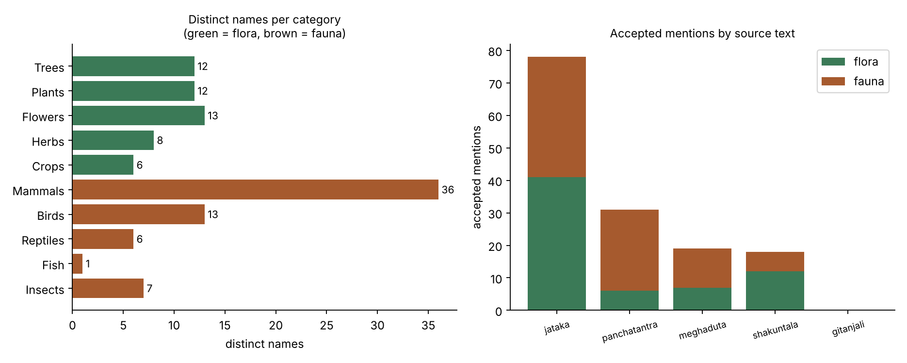
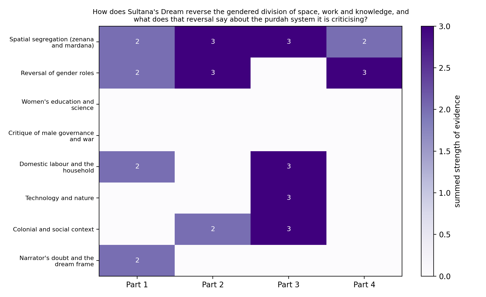
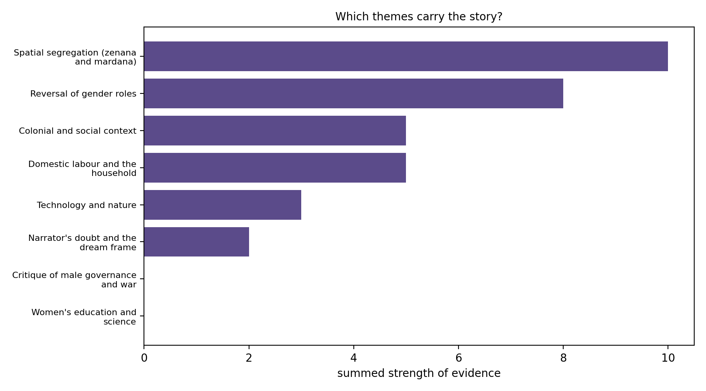

Portfolio introduction. Four assignments, one thread: how far a computer can help with reading, and where a person still has to decide. I cleaned Hindi text for NLP, pulled the plants and animals out of five Indian classics with a retrieval pipeline, ran a seven-step synthetic reading of a short story with a local language model, and wrote a skill that teaches a model to guide students through that method. In each one the model finds and sorts, a script checks it, and I interpret. Each exhibition below shows its work and links to its repository.
01
Assignments
Assignment 01
Hindi Stop Words for NLP
Abstract. Stop words are small grammatical words that carry almost no topic information and are usually removed before text is analysed. I wrote a list of 24 Hindi stop words in Devanagari, grouped by grammatical role, with a short helper that uses the list to clean a sentence.
The list has 24 words in Devanagari, sorted by grammatical job. The assignment sheet gave five sample words (और, लेकिन, या, यह, वह); I kept those and extended the list after reading a few ordinary Hindi paragraphs.
Group
Words
Conjunctions
और, लेकिन, या, क्योंकि
Pronouns and demonstratives
मैं, हम, आप, यह, वह, इस, उस, कुछ
Postpositions
का, की, के, को, से, में, पर
Auxiliary verbs
है, हैं, था
Particles and negation
भी, नहीं
A small helper finds the Devanagari words in a sentence with a regular expression (leaving out the danda । so it does not stick to the last word) and drops the stop words:
_DEVANAGARI_WORD = re.compile(r"[\u0900-\u0963\u0966-\u097F]+")
_stopword_set = set(hindi_stopwords)
def remove_stopwords(text):
tokens = _DEVANAGARI_WORD.findall(text)
return [t for t in tokens if t not in _stopword_set]
Output. Running the script on one sentence removes six of its fourteen words and leaves what happens and where:
Stop words in list : 24
Before : वह गाँव में रहता है और हर सुबह नदी के किनारे टहलने जाता है।
After : गाँव रहता हर सुबह नदी किनारे टहलने जाता
Limits. A short list leaves words behind (रहता and हर survive above). Whether a word is a stop word depends on the task: for sentiment analysis नहीं must stay. Matching is exact, so inflected forms are not handled.
Flora and Fauna in Indian Literature, Extracted with RAG
Abstract. I wanted to know which plants and animals appear in five classic Indian texts without reading every page myself. A retrieval-augmented generation pipeline finds the passages most likely to mention them, a local LLM lists the names, and each name is checked against its passage. The result is 50 flora and 63 fauna names.
Corpus. Five public-domain English translations: Kalidasa’s Shakuntala and Meghaduta, Tagore’s Gitanjali, the Panchatantra and the Jataka.
Chunking. About 1,200 characters per chunk with 200 overlap, giving 2,310 chunks.
Embedding. Each chunk is turned into a vector with nomic-embed-text-v1.5 in LM Studio.
Retrieval. For each of ten categories (Trees, Plants, Flowers, Herbs, Crops, Mammals, Birds, Reptiles, Fish, Insects) I wrote two search sentences and kept the 6 closest chunks by cosine similarity.
Extraction.qwen2.5-7b-instruct (temperature 0) lists the plants and animals in each chunk as JSON.
Checking. A name is accepted only if its category is valid and the name literally appears in the chunk. Of 181 candidates, 146 were accepted and 35 rejected (30 bad category, 5 not in the passage).

Distinct names per category (left) and accepted mentions per source text (right). Categories are the ones the model chose.
Output. 50 flora and 63 fauna names, saved in the format the assignment asked for:
What to check. Some names are filed in the wrong category (elephant under Reptiles, fish and crab under Mammals). Some entries are too general (trees, birds), and singular and plural both appear. Gitanjali gave no accepted names. The texts are scanned OCR, and the embedding prefixes in config.py are not the ones the nomic model documents, so retrieval is probably weaker than it could be.
Abstract. Using the seven-step synthetic reading method, I read part of Rokeya Sakhawat Hossain’s 1905 story, formed a research question about the reversal of space, work and knowledge, and had a local LLM collect evidence from the whole text. I counted the evidence, charted it and read it through feminist theory.
Research question. How does Sultana’s Dream reverse the gendered division of space, work and knowledge, and what does that reversal say about the purdah system it criticises?
Step
What I did
1. Partial reading
Split the story into 4 equal parts and read a random 20% of each (28 of 140 paragraphs, seed 2026)
2. Initial impression
Wrote what I noticed, my position as a reader, the research problem and frameworks (feminist standpoint theory, feminist spatial criticism)
3. Text upload
Cleaned the full text and gave it to the model in four ordered segments
4. Query generation
Wrote a prompt with a fixed list of eight themes and a strict JSON format
5. Extraction
qwen2.5-7b-instruct returned theme, quotation, note and strength for 20 hits; 13 quotations were verified word for word against the text
6. Visualisation
Heatmap and bar chart of the verified evidence
7. Interpretation
Read the charts through theory

Strength of evidence for each theme in each quarter of the story. Only verified quotations are counted.

The same evidence added up over the whole story.
Part
Theme
Quotation
Verified
1
Spatial segregation
“We shut our men indoors.”
yes
2
Spatial segregation
“But dear Sultana, how unfair it is to shut in the harmless women and let loose the men.”
yes
3
Spatial segregation
“On the following day the Queen called upon all men to retire into zenanas for the sake of honour and liberty.”
yes
3
Technology and nature
“They invented an instrument by which they could collect as much sun-heat as they wanted…”
yes
3
Women’s education and science
“Education was spread far and wide among women, and early marriage also was stopped…”
no
Reading the result
Spatial segregation is the only theme that runs through all four parts, which suggests it is the story’s structure. Read with Doreen Massey, the swap shows that a woman’s “proper place” was an arrangement, not nature. Read with standpoint theory (Harding, Hartsock), the women build science while the men laugh at it as “a sentimental nightmare”, and the narrator admits her own “scientific knowledge was very limited”. Purdah is not abolished: the Lady Principal asks that the men enter the zenanas “for the sake of purdah”, and defending seclusion as honour and safety for men makes the same defence for women look like an argument and not a fact of nature.
Limits. The two empty rows are not a finding about the story. The model’s quotations for them were real passages that it altered or joined, so my exact-match check rejected them. 7 of 20 hits failed the check, some labels are noisy, and the strength scores are the model’s own opinion, so the charts show where to look, not proof. The full interpretation and works cited are in the repository.
Abstract. A skill is a Markdown file of instructions that teaches a model one kind of job. Mine helps a literature student move from a partial reading to a research problem, a justified theory and a precise extraction prompt, without writing the interpretation for them.
While doing the synthetic reading, running the model was the easy part. The hard part was the middle: going from a few sampled lines to a research problem, a defensible theory and a prompt that asks for the right thing. The skill is a Markdown file that teaches a model to guide a student through exactly that stretch, steps 2 to 4 of the method.
The header tells a tool when to load it:
---
name: synthetic-reading-guide
description: Helps a literature or cultural studies student turn a partial reading of a literary text into a research problem, a justified choice of theory, and a precise extraction prompt for an LLM. Use when someone has read part of a story, poem, play or novel and asks what to research, which framework fits, or how to prompt a model to pull evidence out of the text.
---
Move
What the model does
1. Read only what is given
Works from the pasted lines; adds no plot points or quotations from memory
2. Reflect the impression
Says what stands out, labelling each point “visible in the lines” or “my guess”, then asks for the student’s own reaction
3. Draft research problems
Up to three, each one sentence tied to the sample
4. Ask about positionality
Asks, gives an example blind spot, and does not answer for the student
5. Suggest frameworks
One main and at most one supporting, each with what it cannot see
Lists what to check by hand; counts support an argument but do not make it
Design choices. It does not write the essay or the interpretation. It separates what is visible in the text from what is a guess. It asks at most two questions per reply and stays under 600 words. It tells the student to read a primary source before citing any framework. The prompt it builds asks for short word-for-word quotations and for a script check against the source, because in my own run 7 of 20 quotations failed that check.
The most useful lesson was about checking. In the flora and fauna project, the model sometimes filed an elephant under reptiles; in the synthetic reading, 7 of its 20 quotations did not match the story word for word. Each time, a simple script check caught the problem, and looking at what was caught taught me more than the clean results did. It also changed how I read the charts: the two empty themes in assignment 3 are a result of my own strict check, not a fact about the story. Across all four projects the same division of labour held up. A model is good at finding and sorting, a script is good at verifying, and the reading, meaning the choice of question, theory and interpretation, stays with the researcher. The skill in assignment 4 is my attempt to write that division down for someone else.
Optional: methods note
All models ran locally in LM Studio (qwen2.5-7b-instruct for extraction, nomic-embed-text-v1.5 for embeddings, temperature 0), with Python for the scripts and matplotlib for the charts. All texts are public-domain English translations or originals, so they could be shared. Names and categories in assignment 2 come from the model and have not been fully corrected by hand.
03
Sources and acknowledgements
Hossain, Rokeya Sakhawat. “Sultana’s Dream.” The Indian Ladies’ Magazine, Madras, 1905.
Kalidasa. Shakuntala, trans. Arthur W. Ryder, Everyman’s Library; Meghaduta (The Cloud Messenger), trans. H. H. Wilson; Tagore, Rabindranath. Gitanjali (1912); The Panchatantra, trans. Arthur W. Ryder (1925); The Jataka, ed. E. B. Cowell, Cambridge University Press. Digitised copies from the Internet Archive and Google Books.
Harding, Sandra. Whose Science? Whose Knowledge? Cornell UP, 1991. Hartsock, Nancy C. M. “The Feminist Standpoint.” Discovering Reality, ed. Harding and Hintikka, D. Reidel, 1983. Massey, Doreen. Space, Place and Gender. U of Minnesota P, 1994.
Synthetic reading method: seven-step procedure from the class handout, Monsoon Semester 2026 (source cited in the handout).
Tools: Python, LM Studio, matplotlib. The charts in assignments 2 and 3 were made by me from my own results.
This was the smallest project and the best warm-up. The job sounds simple, pick the Hindi words that do grammar and say nothing about a topic, but deciding which words those are turned out to be a real piece of thinking.
24stop words
5groups by grammatical role
6 of 14words removed in the demo
01
What a stop word is, and why anyone removes them
Take a Hindi sentence and count the words that tell you what it is about. Usually it is only a few. The rest, words like है, के or और, hold the sentence together grammatically but say nothing about the subject. These are stop words. When a computer counts words to find a topic, these small words show up far more often than any real content word and bury the useful signal. So the usual first step in text analysis is to take them out.
The assignment asked for a stop-word list in a Python file. I treated it as a chance to understand what makes a word a stop word instead of just assembling a list.
02
Starting from the sample
The assignment sheet gave five Hindi words as an example: और, लेकिन, या, यह, वह, and asked us to modify the list. I kept all five and treated them as a seed. Copying a ready-made list from the internet would have been faster, but I would not have known why any word was in it, and I could not have defended the choices.
03
Choosing words by reading real text
I went through a few ordinary Hindi paragraphs and marked every small word that was doing grammatical work. My test was simple: delete the word and ask whether the sentence still tells me what happened and where. If it does, the word is a candidate. If deleting it changes the topic, it stays out.
Why I did it this way
Writing down the words I thought of first would have given me a list shaped by memory. Reading real paragraphs showed me which small words genuinely appear all the time.
04
Grouping the words by grammatical job
Instead of one long list I sorted the words into five groups. Conjunctions join clauses. Pronouns and demonstratives point at people and things without naming them. Postpositions, which Hindi uses where English uses prepositions, show relationships such as possession (का, की, के) or location (में, पर). Auxiliary verbs carry tense. Particles like भी and नहीं add emphasis or negation.
Group
Words
Conjunctions
और, लेकिन, या, क्योंकि
Pronouns and demonstratives
मैं, हम, आप, यह, वह, इस, उस, कुछ
Postpositions
का, की, के, को, से, में, पर
Auxiliary verbs
है, हैं, था
Particles and negation
भी, नहीं
Grouping made the list easier to check and made gaps visible. If one group looked thin, I could see it straight away, which is how the list grew from the five sample words to 24.
05
Writing a tokeniser and filter
A list alone does nothing, so I wrote remove_stopwords(text) to test it. It works in two moves. First it tokenises, which means splitting the sentence into separate words, using a regular expression that matches runs of Devanagari characters. Then it keeps only the tokens that are not in the list.
_DEVANAGARI_WORD = re.compile(r"[\u0900-\u0963\u0966-\u097F]+")
_stopword_set = set(hindi_stopwords)
def remove_stopwords(text):
tokens = _DEVANAGARI_WORD.findall(text)
return [t for t in tokens if t not in _stopword_set]
The character range covers letters, vowel signs and the nukta, but skips the danda (।) and double danda. The list is also turned into a set once, because checking whether something is in a set is much faster than scanning a list every time.
Why I did it this way
Without leaving out the danda, the full stop sticks to the last word, so है। would not match है and would slip through. That small bug is what taught me tokenising matters as much as the list.
06
Running it on a sentence
I ran the script on one sentence to see whether it behaved. The function removed six of the fourteen words: वह, में, है, और, के, है. What is left is the part that tells you what happens: a village, a river, a morning walk.
Stop words in list : 24
Before : वह गाँव में रहता है और हर सुबह नदी के किनारे टहलने जाता है।
After : गाँव रहता हर सुबह नदी किनारे टहलने जाता
This project has no chart, because the honest picture of it is the before and after above.
07
What I noticed afterwards
Two words, रहता and हर, survived, so 24 words is a light clean and not a deep one. More importantly, a stop word is not a fixed fact about a language. For topic modelling नहीं is noise, but for sentiment analysis it flips the meaning of a sentence, so it should come out of the list. Matching is also exact, which is why है and हैं are listed separately. A stemmer, which reduces inflected forms to a base word, is the next step I would try.
Flora and Fauna in Indian Literature, Extracted with RAG
I wanted to know which plants and animals turn up in a few classic Indian texts without reading every page myself. The answer was a small retrieval-augmented generation pipeline: cut the books up, find the pieces most likely to matter, and let a local model name what it sees, then check the model.
2,310chunks searched
146mentions accepted
50 + 63flora and fauna names
01
The idea: what RAG is and why I used it
I wanted a list of every plant and animal in a handful of Indian classics without reading every page. The obvious move is to paste the books into a language model, but a small local model cannot hold five books at once, and it gets sloppy on long text. RAG, retrieval-augmented generation, solves this by splitting the job. First a search step finds the passages most likely to matter. Then the model only reads those passages and answers from them. Search narrows it down, the model does the reading.
02
Choosing five texts that do different jobs
All five are public-domain English translations, so they can be shared on GitHub. I used English because a 7B model is far more reliable in English than in Sanskrit or Pali. I also wanted variety in the kind of writing, so the animal fables would not drown out everything else.
Text
Why it is in the corpus
Shakuntala (Kalidasa)
A hermitage forest: deer, bees, creepers, jasmine
Meghaduta (Kalidasa)
A cloud crosses India, so the landscape changes almost every verse
Gitanjali (Tagore)
Rivers, lotus, birds, monsoon imagery
Panchatantra
Animal fables, so fauna everywhere
Jataka
Birth stories with animals, trees and village crops
03
Chunking: cutting the books into searchable pieces
Search works on small pieces, so each book was cut into chunks of about 1,200 characters. The script prefers to cut at a line break or a space so words are not split. Neighbouring chunks overlap by 200 characters. That gave 2,310 chunks: Jataka 953, Panchatantra 583, Shakuntala 376, Meghaduta 302, Gitanjali 96.
Why I did it this way
The overlap matters. A plant named at the edge of a chunk would otherwise be cut in half and missed by both neighbours.
04
Embedding: turning text into numbers you can compare
A computer cannot tell that “peacock” and “a bird with a fanned tail” are related unless the text becomes numbers. An embedding model reads a passage and returns a list of 768 numbers that captures its meaning. Passages about similar things end up with similar numbers. I used nomic-embed-text-v1.5 in LM Studio and saved the vectors so the index never has to be rebuilt.
05
Retrieval: letting similarity do the first pass
Sending 2,310 chunks to the model would be slow and noisy, so I wrote two search sentences for each of ten categories: Trees, Plants, Flowers, Herbs, Crops, Mammals, Birds, Reptiles, Fish and Insects. One example is “birds, peacocks, swans, parrots and cuckoos”. Each sentence is embedded the same way, then compared with every chunk using cosine similarity, which measures how closely two vectors point in the same direction. The 6 closest chunks per category are kept, and a chunk that matches two categories is only sent once.
06
Extraction: asking the model for names, strictly
Each retrieved chunk goes to qwen2.5-7b-instruct at temperature 0, which makes the answer as repeatable as possible. The instruction is blunt: list the plants and animals named in the passage, use the name as written, only real organisms, one of the ten categories, reply in JSON only. JSON matters because a script can read it directly.
07
Checking the model instead of trusting it
Small models sometimes add a plausible animal the passage never mentions. So a name is accepted only if its category is one of the ten allowed ones and the name literally appears in the chunk it came from. Rejected rows are not thrown away. They are saved in results/extraction_raw.json so I can see how the model went wrong.
Count
Accepted mentions
146
Rejected: category not one of the ten
30
Rejected: name not found in the passage
5
08
What came out
Distinct names per category (left) and accepted mentions per source text (right).
The result is 50 flora names and 63 fauna names. The lotus is the only plant found in four of the five texts. The Jataka gives the most hits simply because it is the biggest book. Mammals dominate the fauna and fish barely appear. Gitanjali produced nothing. I did not investigate, but it is the shortest text, so the bigger books may be crowding it out of the top 6.
09
Where it goes wrong
I read the results and wrote the problems down so nobody has to discover them. Elephant is filed under reptiles, and fish and crab under mammals. Some entries are too general (trees, birds), singular and plural are counted separately, and a few Pali names from the Jataka could not be confirmed quickly, so I left them in rather than guess. The texts are scanned books, so there is OCR noise too.
Why I did it this way
The embedding prefixes in config.py are not the ones the nomic model documents. I kept them as they were when the results were made so the numbers stay honest. Rerunning with the right prefixes and a higher TOP_K is what I would try first.
Synthetic reading means a person reads part of a text, forms a question, and then uses a model to gather evidence from the whole thing. I tried the seven-step method on Rokeya Sakhawat Hossain’s 1905 story, and the most interesting part ended up being what the checking removed.
28 / 140paragraphs read by me
20hits from the model
13quotations verified
01
The idea: what synthetic reading is
Reading a whole text closely is slow, and reading it by computer alone misses meaning. Synthetic reading sits between the two. A person reads part of a text and forms a question. A language model then collects evidence for that question from the whole text. The person checks the evidence and interprets it. The class handout breaks this into seven steps, and I followed them in order.
02
Why this story
“Sultana’s Dream” is short, about 4,000 words, so a small local model can read all of it in four pieces. It is in English, where local models behave better. It is out of copyright, so the full text can live in the repository. It also makes an argument I could test: the story sets up a reversal, so I could ask where the reversal is built and with what.
Research question. How does the story reverse the gendered division of space, work and knowledge, and what does that say about the purdah system it criticises?
03
Step 1: reading a random sample
I split the story into four equal parts of 35 paragraphs and read a random 20% of each, 7 paragraphs per part and 28 in all. The pick is random (seed 2026) so I could not just choose passages that suit my idea. The script records each pick as, for example, [2.16], the 16th paragraph of part 2, so I can say exactly what I did and did not read.
Why I did it this way
Sampling from every quarter stops me forming an opinion from the opening alone. A story can change direction, and four parts means I see the whole shape.
04
Step 2: writing down my first impression
Lines like “Where are the men?” already showed the pattern. Before touching the model I wrote down what I noticed, where I am reading from as a person, what could go wrong, and the frameworks I would use: feminist standpoint theory and feminist spatial criticism. Standpoint theory asks who is allowed to know things, and spatial criticism asks who is allowed to be where.
Why I did it this way
This step is easy to skip and it is the point of the method. My position as a reader decides what question the model is asked, so it has to come before the model does.
05
Step 3: giving the model the whole text
I cleaned the story and gave all of it to the model in four ordered segments, so each piece fits in the model’s memory and the model always knows where it is in the story.
06
Step 4: writing the prompt
The prompt has eight labelled blocks: role, research question, theoretical lens, the text segment with its place in the story, the task, a fixed list of eight themes, rules, and the output format. The rules say to quote exactly, to return nothing for a theme that is not present, and to ignore outside knowledge about the author. The theme list lives in themes.json so the prompt and the charts share the same labels.
07
Step 5: extraction with checks built in
qwen2.5-7b-instruct ran in LM Studio at temperature 0. For each hit it returned a theme, a word-for-word quotation of 25 words or fewer, a short note and a strength from 1 (faint) to 3 (central). The script then searched for every quotation in the segment it came from. Only quotations found word for word are marked verified and counted. The model returned 20 hits and 13 passed.
08
Step 6: counting and charting
The script adds up the strength scores for each theme in each part, then draws a heatmap and a bar chart. Darker cells mean stronger evidence.
Strength of evidence for each theme in each quarter of the story. Only verified quotations are counted.The same evidence added up over the whole story.
09
Step 7: interpreting the result
Spatial segregation is the only theme in all four parts, which suggests it is the story’s skeleton. Read with Doreen Massey, the swap shows that a woman’s “proper place” was an arrangement, not nature. Read with standpoint theory, the women build science while the men dismiss it, and the narrator admits her own scientific knowledge was very limited.
Why I did it this way
The two empty rows, education and critique of male governance, are not a finding about the story. The model’s quotations for them were real passages that it altered or stitched together, so my exact-match check rejected them. The check did its job, but two important passages are missing from the charts, so I used them by hand in the interpretation and said so.
Seven of 20 hits failed the check, some labels are noisy, and the strength scores are the model’s opinion. With only 13 verified hits, the charts are a map of where to look, not proof.
A skill is a Markdown file that teaches a model how to do one kind of job well, so you do not have to explain the job every time. Mine grew straight out of assignment 3, because that was where I felt the method wobble.
7moves the model follows
3research problems at most
600word limit per reply
01
The idea: what a skill is
If you ask a language model for help with a job, you usually have to explain the job each time: how to behave, what to avoid, what a good answer looks like. A skill is a Markdown file that holds those instructions once. Load it, and the model already knows how to do that one kind of job well. It is less like a prompt and more like a short training manual for the model.
02
Where my skill came from
In the synthetic reading, running the model was the easy part. The hard part was the middle: getting from a few sampled lines to a research problem, choosing a theory I could defend, and writing a prompt that asks for the right thing. When I rushed that thinking, the extraction came back vague. So the skill covers exactly that stretch, steps 2 to 4 of the method, and helps a student do it properly.
03
The header tells a tool when to load it
---
name: synthetic-reading-guide
description: Helps a literature or cultural studies student turn a partial reading of a literary text into a research problem, a justified choice of theory, and a precise extraction prompt for an LLM. ...
---
The description matters more than it looks. A tool that supports skills reads it to decide, from a student’s first message, whether this skill applies. So it says what the skill does and when to use it.
04
The seven moves, in order
The skill makes the model work in a fixed sequence, always from the lines the student pastes in. The order is deliberate: the model reflects and asks questions before it suggests anything, so the student’s own reading comes first.
Move
What the model does
1. Read only what is given
Works from the pasted lines, adds no plot or quotations from memory
2. Reflect the impression
Labels each point “visible in the lines” or “my guess”, then asks for the student’s own reaction
3. Draft research problems
Up to three, one sentence each, tied to the sample
4. Ask about positionality
Asks about language, region and discipline, and does not answer for the student
5. Suggest frameworks
One main and at most one supporting, each with what it cannot see
6. Write the extraction prompt
Eight labelled blocks, from role to output format
7. Prepare for interpretation
Lists what to check by hand
05
Why it never writes the essay
The research problem, the theory and the interpretation are the student’s work. If a model writes them, the student learns nothing and the argument is not theirs. So when someone asks for the essay, the skill declines politely and offers to help find a question instead. It also tells the model to separate what is visible in the lines from what is a guess, so the student can see which part of an answer rests on their own evidence.
06
Limits that keep replies useful
Two questions at most per reply, under 600 words. A long reply with six questions is hard to act on.
The framework table is a map, not an authority. It maps patterns to thinkers such as Spivak, Said, Crenshaw and Harding, but the skill tells students to read a primary source before citing anyone and never to invent page numbers.
A “when not to use” section. If nothing has been read yet, the skill sends the student back to read a sample first, because the whole method depends on a real reader’s first impression.
Why I did it this way
The prompt the skill builds carries the lessons of assignment 3: quotations of 25 words or fewer, an empty list allowed, and a script check against the source. I added that last point because 7 of my own 20 quotations failed the check.
07
How the file is laid out and how to use it
The file follows the usual layout: a short header, purpose and when not to use it, the process step by step, a fixed output format, style rules (talk like a patient tutor, never present a guess as a finding), and one worked example using lines from “Sultana’s Dream”.
In any chat model, paste the file at the start of the conversation or put it in the system prompt, then paste your partial reading. In a tool that supports skills, save it as SKILL.md inside a folder named synthetic-reading-guide and add the folder in the skill settings.